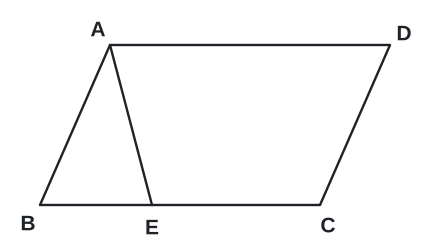

אגף שמאל הוא הפרש ריבועים: y⁴ = (y²)² ו־16 = 4².y⁴ − 16 = (y² − 4)(y² + 4)המשוואה הופכת ל:(y² − 4)(y² + 4) =(x² − 4)(y² + 4)y² + 4 חיובי תמיד (לפחות 4), ולכן מותר לחלק בו:y² − 4 = x² − 4y² = x²שני מספרים עם אותו ריבוע שווים בערכם המוחלט:|x| = |y|
מוקשים נפוצים
x = y לא בהכרח: גם x = −y מקיים את המשוואה. לכן הערך המוחלט.
נבדקהפתרון תואם את מפתח התשובות של הספר.
שאלה 2

בסרטוט שלפניכם ABCD מקבילית.
נתון: שטח המשולש ABE מהווה ¼ משטח הטרפז ADCE.
BEBC = ?
הצגת הפתרון
התשובה הסופית4תשובה (4)2:5
דרך הפתרון והסבר
נסמן BC = 1 (במקבילית גם AD = 1), ואת גובה המקבילית ב־h.לשני הצורות אותו גובה h: המרחק בין AD ל־BC.שטח המשולש ABE:12 · BE · hהטרפז AECD: הבסיסים המקבילים AD ו־EC.EC = BC − BE = 1 − BEשטח: AD + EC2 · h =1 + 1 − BE2 · h =2 − BE2 · hנתון ששטח המשולש הוא רבע משטח הטרפז:BE2 · h = 14 · 2 − BE2 · hמצמצמים h2 משני האגפים:BE = 2 − BE44BE =2 − BE ⇒5BE =2 ⇒BE =25BC = 1, ולכן:BE : BC = 2 : 5
מוקשים נפוצים
המשולש והטרפז נשענים על אותו גובה – לכן h מצטמצם ונשארת משוואה פשוטה.
נבדקהפתרון תואם את מפתח התשובות של הספר.
שאלה 3
נתון: x מספר שלם המתחלק ב־4 וב־5 ללא שארית.
y = x + 10
איזה מהביטויים הבאים אינו מתחלק ב־20 ללא שארית?
הצגת הפתרון
התשובה הסופית3תשובה (3)3y
דרך הפתרון והסבר
x מתחלק ב־4 וב־5, ו־4 ו־5 זרים, ולכן x מתחלק ב־20.x = 20k, ולכן y = 20k + 10.נבדוק כל תשובה (מה שנשאר אחרי הורדת הכפולות של 20):6y = 120k + 60 – מתחלק ב־20 ✓2y = 40k + 20 – מתחלק ב־20 ✓3y = 60k + 30 – שארית 10 ✗4y = 80k + 40 – מתחלק ב־20 ✓הביטוי שאינו מתחלק ב־20 הוא 3y – תשובה (3).
מוקשים נפוצים
מתחלק ב־4 וב־5 פירושו מתחלק ב־20 – כי 4 ו־5 זרים.
נבדקהפתרון תואם את מפתח התשובות של הספר.
שאלה 4
במפעל לייצור זכוכית עובדים 4 זגגים, בעלי אותו הספק, המייצרים 9 חלונות ב־40 דקות. בעל המפעל שכר את שירותיהם של 2 זגגים נוספים שהספקם כפול מהספקם של הזגגים הקיימים במפעל.
כמה זמן ידרוש כעת (בשעות) לצוות הזגגים החדש לייצר 27 חלונות?
הצגת הפתרון
התשובה הסופית1תשובה (1)1
דרך הפתרון והסבר
נמדוד הספק ב"יחידות זגג" – כמה מייצר זגג רגיל אחד.4 זגגים מייצרים 9 חלונות ב־40 דקות.הצוות החדש:4 זגגים רגילים = 4 יחידות.2 זגגים בהספק כפול = 2 · 2 = 4 יחידות.סך הכול 8 יחידות – פי 2 מהצוות המקורי.כמות העבודה: 27 חלונות הם פי 3 מ־9 חלונות.הזמן:פי 3 עבודה ⇐ פי 3 זמן; פי 2 הספק ⇐ חצי זמן.40 · 3 ÷ 2 = 60 דקותהשאלה בשעות: 60 דקות = שעה אחת.
מוקשים נפוצים
התשובה מבוקשת בשעות – 60 (דקות) היא מלכודת; התשובה 1.
נבדקהפתרון תואם את מפתח התשובות של הספר.
שאלה 5
נתון: a < 0
b3a < b2a
מה מהבאים נכון בהכרח?
הצגת הפתרון
התשובה הסופית4תשובה (4)1 < |b|
דרך הפתרון והסבר
נתון: b3a < b2a, ו־a < 0.נכפיל את שני האגפים ב־a. a שלילי, ולכן כיוון אי־השוויון מתהפך:b³ > b²נעביר אגף ונוציא גורם משותף:b³ − b² > 0 ⇒b²(b − 1) > 0b² חיובי (b ≠ 0, אחרת שני האגפים שווים), ולכן:b − 1 > 0 ⇒ b > 1b גדול מ־1, ולכן בהכרח 1 < |b| – תשובה (4).על a לא ידוע דבר מלבד שהוא שלילי, ולכן (1), (2) ו־(3) לא בהכרח נכונות.
מוקשים נפוצים
הכפלה או חלוקה במספר שלילי הופכת את כיוון אי־השוויון.
נבדקהפתרון תואם את מפתח התשובות של הספר.
שאלה 6
כמה מעגלים שונים קיימים שהיקפם 10 ס״מ ושטחם 8 סמ״ר?
הצגת הפתרון
התשובה הסופית3תשובה (3)0
דרך הפתרון והסבר
ההיקף קובע את הרדיוס:2πr = 10 ⇒ r = 5πהשטח של מעגל ברדיוס הזה:π · (5π)² = π · 25π2 = 25π25π ≈ 253.14 ≈ 7.96השטח יוצא בערך 7.96, ולא 8.רדיוס אחד קובע גם את ההיקף וגם את השטח, ושני הנתונים לא מתיישבים – אין אף מעגל כזה: 0.
מוקשים נפוצים
היקף ושטח תלויים באותו רדיוס – אי אפשר לבחור את שניהם בחופשיות.
נבדקהפתרון תואם את מפתח התשובות של הספר.
שאלה 7
נתון: a ו־b הם מספרים טבעיים.a = b + 1 , a² − b² = 23
a × b = ?
הצגת הפתרון
התשובה הסופית3תשובה (3)132
דרך הפתרון והסבר
a² − b² הוא הפרש ריבועים:a² − b² = (a − b)(a + b)נתון a = b + 1, ולכן a − b = 1:1 · (a + b) = 23 ⇒ a + b = 23יש לנו שתי משוואות:a − b = 1, a + b = 23מחברים: 2a = 24 ⇒ a = 12, ולכן b = 11.המכפלה:a × b = 12 · 11 = 132בדיקה: 144 − 121 = 23 ✓
מוקשים נפוצים
a − b = 1 הופך את הפרש הריבועים ישר לסכום a + b.
נבדקהפתרון תואם את מפתח התשובות של הספר.
שאלה 8
משה יצא מביתו בשעה 9:00 וצעד במהירות של 5 קמ"ש במשך שעה לכיוון מערב עד לנקודה A. לאחר מכן פנה לכיוון דרום וצעד במשך שעה נוספת באותה המהירות עד לנקודה B. בתום שעה זו צעד משה שוב מערבה במשך שעה, באותה המהירות, עד לנקודה C.
אם משה יצעד כעת, באותה המהירות, בקו ישר בחזרה לביתו, כמה זמן (בשעות) תארך דרכו חזרה?
הצגת הפתרון
התשובה הסופית1תשובה (1)√5
דרך הפתרון והסבר
בכל שעה משה צועד 5 ק"מ (5 קמ"ש). נעקוב אחרי מיקומו ביחס לבית:שעה מערבה: 5 ק"מ מערבה.שעה דרומה: 5 ק"מ דרומה.שעה מערבה: עוד 5 ק"מ מערבה.בסך הכול הוא 10 ק"מ מערבה מהבית ו־5 ק"מ דרומה ממנו.הדרך הישרה הביתה היא היתר של משולש ישר זווית עם ניצבים 10 ו־5:√10² + 5² =√125 =√25 · 5 =5√5 ק"מהזמן באותה מהירות:5√55 = √5 שעות
מוקשים נפוצים
5√5 הוא המרחק בק"מ, לא הזמן – תשובה (3) היא מלכודת.
נבדקהפתרון תואם את מפתח התשובות של הספר.
שאלה 9
ליעד ושי בחרו שני מספרים שונים בעלי 6 ספרות הזהות זו לזו. מה מהבאים נכון בהכרח?
הצגת הפתרון
התשובה הסופית3תשובה (3)סכומם של שני המספרים מתחלק ב־3
דרך הפתרון והסבר
מספר בן 6 ספרות זהות d נראה כך: dddddd.dddddd = d · 111111נפרק את 111111:111111 =3 · 37037 =3 · 7 · 11 · 13 · 37סכום שני מספרים כאלה, עם ספרות d₁ ו־d₂:d₁ · 111111 + d₂ · 111111 = (d₁ + d₂) · 111111111111 מתחלק ב־3, ולכן הסכום מתחלק ב־3 תמיד ✓למה לא 2, 4 או 6?111111 אי־זוגי, ו־d₁ + d₂ יכול להיות אי־זוגי. למשל 111111 + 222222 = 333333 – אי־זוגי.אז הסכום לא בהכרח מתחלק ב־2, ולכן גם לא ב־4 או ב־6.
מוקשים נפוצים
אפשר לזכור: סכום הספרות של 111111 הוא 6, ולכן הוא מתחלק ב־3.
נבדקהפתרון תואם את מפתח התשובות של הספר.
שאלה 10
נתון: x ו־y מספרים עוקבים.z = x² + y²
מה מהבאים נכון בהכרח?
הצגת הפתרון
התשובה הסופית4תשובה (4)z אי־זוגי
דרך הפתרון והסבר
x ו־y עוקבים, ולכן אחד מהם זוגי והשני אי־זוגי.ריבוע של מספר זוגי – זוגי.ריבוע של מספר אי־זוגי – אי־זוגי.z = x² + y² הוא זוגי + אי־זוגי, ולכן אי־זוגי – תמיד ✓למה לא שאר התשובות?(3) z ראשוני: 3 ו־4 נותנים 9 + 16 = 25 – לא ראשוני ✗(1) x < z − y: עבור x = 0, y = 1: z = 1, ו־0 < 0 לא נכון ✗(2) y < z − x: עבור x = 1, y = 0: z = 1, ו־0 < 0 לא נכון ✗התשובה: (4).